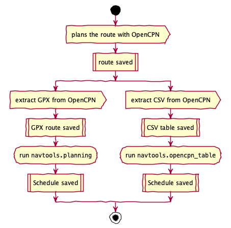
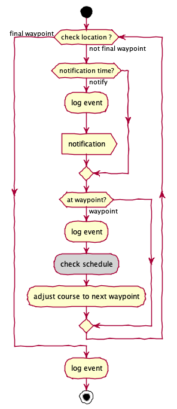
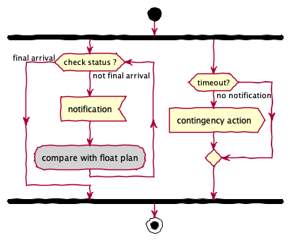

This introduction reflects parts of the C4 Model (https://c4model.com) with Context, Containers, and Components. The Code is described in separate chapters.
The Overview and Context is a top-level view of the context and the problem domain.
The Actors provides some additional background on the actors in the various use cases.
The Use Cases provides more detailed narratives on each use case.
The Container Overview describes the various containers for software components.
The Component Architecture lists a number of components and some ways they interact.
There are Other Notes and References with additional details.
Overview and Context¶
The essential stories are these:
“As skipper of S/V Red Ranger, I need to create detailed voyage plans with distance, bearing, and estimated time of arrival to each mark or waypoint.”
“As a monitor of S/V Red Ranger, I need to know if the vessel is make progress accoring to plan, so I can help with rescue efforts if there is a problem.”
To put these stories into context, we have a number of tools for voyage planning, execution, and analysis. This software fills some essential gaps among those tools.
![@startuml
'context'
left to right direction
actor Skipper as s
actor Monitor as m
node OpenCPN as c
node ChartPlotter as p
package Navtools {
usecase "Planning" as UCP1
usecase "Float Plan Document" as UCP2
usecase "Route Document" as UCP3
usecase "Execution" as UCX1
usecase "Notifications" as UCX2
usecase "Analysis: Summary" as UCA1
usecase "Analysis: Waypoint Reconciliation" as UCA2
}
s --> UCP1
s --> UCP2
m <-- UCP2
s --> UCP3
p <-- UCP3
s --> UCX1
p --> UCX1
s --> UCX2
m <-- UCX2
s --> UCA1
c <-- UCA2
s --> UCA2
@enduml](_images/plantuml-2e217c6db70ec14a930b95842cbe0fd0863aee8a.png)
These fit into three broad areas: Planning, Execution, and Analysis.
Planning. Voyage planning involves locating courses that avoid navigational hazards and make use of the available Aids to Navigation (ATONs). In some cases, tide and current are accounted for, as well as adverse weather.
For route planning, S/V Red Ranger relies on OpenCPN (https://opencpn.org). This supports createing waypoints and routes. It can create GPX and CSV files that can be shared with chartplotters, and individuals who monitor the voyage.
It’s not a good idea to sketch a route on an electronic chart and copy the details to create a schedule for sailing. Trying to do this manually is likely to introduce transcription errors. OpenCPN can produce a CSV file of sailing details; this is difficult to work with because the data is highly formatted for human readability. OpenCPN can produce a GPX file, but it lacks bearing and distance information required to be useful.
Execution. For sailing a particular voyage, S/V Red Ranger carries several ways of assuring that she is on course.
Crew observation of the ATONs, landmarks, and seascape.
Electronic Chartplotter in the cockpit. (B&G Zeus2)
Backup Chartplotter at the nav station. (Standard Horizon CP180i)
iNavX on a iPhones and iPad (http://www.inavx.com). These use a separate Dual XGPS 150 antenna (http://gps.dualav.com/explore-by-product/xgps150a/).
OpenCPN on a MacBook Pro. (http://opencpn.org)
Paper charts and standard piloting techniques like dead reckoning, lines of position and course lines.
This is used to be sure S/V on course.
Additionally, notifications are made via a Spot Messenger (https://www.findmespot.com/en-us/). Beyond this, the AIS transponder on Red Ranger can be monitored by Marine Traffic (https://www.marinetraffic.com/en/ais/details/ships/shipid:4840133/mmsi:367449760/imo:0/vessel:RED_RANGER/_:bc5a3f5a398b45a0c5c45e4dc2d3ce02) These two mechanisms assure that a monitor can notify authorities of Red Ranger fails to check in.
The cockpit chartplotter provides an Estimated Time of Arrival (ETA) to a specific waypoint based on current course and speed. It fails to provide the planned ETA to subsequent waypoints.
When deviating from the original plan, additional details are required, and the Chartplotter may be used to create new routes.
Contingency planning during a voyage is related to the following advice:
“The most dangerous piece of equipment is the calendar. The issue here is not maintaining a schedule, but sailing safely during daylight hours and leaving enough time to locate an anchorage before dark.”
Analysis. There are two essential types of retrospective analysis. One is to analyze logs. The ther is to reconcile route and waypoint changes made along the way.
Logging is done several ways.
The Chartplotter in the cockpit can record a track.
The backup chartplotter in the nav station can also record a track. It’s a little more difficult to extract data from this chartplotter.
OpenCPN on a MacBook Pro with its own GPS antenna can record a track. This is not currently feasible on Red Ranger: there’s no way to secure the computer or provide power.
iNavX on an iPhone or iPad with a separate GPS antenna. This also requires leaving the phone running. The track can be extracted through the X-Traverse web site, an awkward intermediate step.
Paper logging of heading, speed, wind and engine for each sail change, tack and each hour. This is currently how track analysis is handled.
Analysis of waypoint changes requires identifying a single source of the truth for waypoints and then distributing the waypoints to the various devices. The OpenCPN computer seems best for this, since it’s also used for planning and creating new waypoints.
The chartplotters can have waypoints transferred to them from the computer via GPX files or the USB-based NMEA-0183 interface. This makes the computer the source of truth.
Actors¶
The primary actor for the use cases is the Skipper of S/V Red Ranger. Crew members may participate in the Execution. However, the ultimate responsibility lies with the skipper.
Voyage planning can be forwarded to shore Monitor in the form of a Float Plan Document. Using SPOT Messenger satellite communications, we can provide actual positions so that the shore crew can compare positions against the voyage plan.
The Chartplotter and OpenCPN application on the computer are other, external systems, and therefore actors in these use cases. They aren’t autonomous, and some manual intervention is required to exchange waypoint and route information between these actors and the navtools system described here.
Analysis is done to make sure that subsequent plans use the best available information.
Use Cases¶
There are a number of use cases for navtools. Each has some supporting details:
Planning Use Case¶
The overall planning use case creates a a waypoint-by-waypoint schedule or “Voyage Track”. See Bowditch [bowditch], section 2508, Constructing a Voyage Track. Also, see Bowditch [bowditch], section 802 for more information on planning.
- bowditch(1,2,3)
THE AMERICAN PRACTICAL NAVIGATOR. http://www.irbs.com/bowditch/ Also http://msi.nga.mil/MSISiteContent/StaticFiles/NAV_PUBS/APN/pub9.zip

Generally there are two steps to this.
Track Planning.
Actor plans the route in general with OpenCPN.
OpenCPN saves the route as a list of waypoints.
Voyage Details.
Actor extracts the route details from OpenCPN. There are three variations on creating a schedule from a route.
Extract a route file in GPX and run
navtools.planning. This can also be downloaded to the Chartplotter. See Route Document Use Case for details.Extract a planning table in CSV and run
navtools.opencpn_table.
System creates a “schedule” file with the waypoints plus additional information like distance to next waypoint, bearing of next waypoint, and ETA.
The actor can perform this use case multiple times to create alternatives and contingency plans.
Float Plan Document Use Case¶
This is a variation on the basic Planning Use Case. It involves an extra step:
Actor extracts the route details. System creates a “schedule” file with the waypoints plus additional information like distance to next waypoint, bearing of next waypoint, and ETA. There are two variations on creating a schedule from a route.
Extract a route file and run
navtools.planning.Extract a planning table and run
navtools.opencpn_table.
Actor runs a spreadsheet application (Open Office Org, for example), and imports the schedule file. The schedule is transformed into a Float Plan.
The Float Plan document includes boat description, US CG locations and phone numbers.
Route Document Use Case¶
This is a variation on the basic Planning Use Case. This is how the route information arrives at the Chartplotter.
Actor extracts the route details from OpenCPN in GPX format.
This is downloaded to the Chartplotter.
This involves transferring the GPX file to a MicroSD card and the importing the route to the chartplotter.
Execution Use Case¶

Consider a sample sailing story for the “Check Schedule” step in the diagram above.
Actors depart their slip for a destination that involves \(n > 2\) waypoints.
System (cockpit chart plotter) shows ETA to waypoint 1. Actors arrive at waypoint 1, switch system to waypoint 2.
System shows ETA to waypoint 2. Actors arrive at waypoint 2, switch system to waypoint 3.
System shows ETA to waypoint 3. Actors realize that arrival time is now unsafe (i.e., after dark).
At waypoint 1 – due to adverse wind or currents – Red Ranger could have been behind the overall schedule, and the actors needed to know this before setting course for waypoint 2.
This means that waypoint-by-waypoint planned ETA’s are required for safe execution of a schedule. The skipper can then compare planned ETA’s with actual ETA’s to determine if contingency plans should be executed.
A “Check Schedule” could replace the current route with a new route. While the details of the route and waypoints have changed, the general use case remains in “Execution” mode until Red Ranger is docked, moored, or anchored safely.
Notifications Use Case¶
This can be a transfer of information from Red Ranger to the Monitor. There are several steps; this is closely related to the “Execution” use case.

We can think of this as two sequences of steps.
Skipper uses the Spot Messenger to post an OK message at a time noted on the Float Plan. This is generally noon US East local time.
Messenger posts the message to the Monitor.
The Monitor must now compare the notification against the Float Plan.
This can also be a failure to transfer information from Red Ranger.
Red Ranger is delayed or has more serious problems: no message is sent.
The Monitor must look at the Float Plan to note that a check-in is missing.
Ideally, the first use case is the only one exercised. The second use case is a rare situation.
Analysis: Summary Use Case¶
In retrospect, a track may be analyzed to compute actual distance run (and times of arrival). This can be compared with the plan to improve the quality of the planning process.
The essential feature is analysis of the track created by the GPS chartplotter (or computer) during sailing.
There are two ways to initiate this:
Actor extracts the track from the GPS chartplotter. System saves the track as a list of positions and times, generally in GPX format.
Actor manually enters log pages into a spreadsheet to create a CSV file.
Actor runs the
navtools.analysisapplication. System creates a CSV file with the track position plus additional information like distance to next position, cumulative time and cumulative distance.Actor runs a spreadsheet application (Open Office Org, for example), and imports the analysis results.
Analysis: Waypoint Reconciliation Use Case¶
In retrospect, waypoints (and routes) may be changed when voyaging. The chartplotter’s data must be compared with the original data on the computer to make sure the computer has the complete list of known good waypoints.
Actor dumps charplotter-unique waypoints. These are not on the computer, which is the single source of truth. Chartplotter provides a file.
Actor dumps OpenCPN waypoints. OpenCPN provides a file.
Actor runs the
navtools.waypoint_mergeapplication. System creates a GPX file with new and changed waypoints. Ideally GUID’s are used to manage changes. If necessary, changes can be performed with a “to be added” and “to be deleted” list. Because removing a waypoint can break routes, an incremental set of changes is available to fix routes before deleting changed waypoints.Actor merges the waypoints, loading new and changed waypoints to OpenCPN.
Actor makes manual edits and updates waypoints and routes to cleanup and simplify. The OpenCPN data can be used to download new routes and waypoints to the chartplotter.
Additional Steps:
Dump chartplotter-unique routes (if any.) These are not on the computer.
Merge the routes into OpenCPN. Make any manual edits.
Merging routes makes the computer the source of truth for planning.
Container Overview¶
The interaction among containers looks like this:
![@startuml
'containers'
node laptop {
component opencpn
component navtools
component spreadsheet
}
node chartplotter
person skipper
artifact "GPX file" as gpxfile
artifact "CSV file" as csvfile
artifact "USR file" as usrfile
artifact "Schedule file" as schedule
artifact "Float Plan" as floatplan
artifact "Analysis" as analysis
skipper ---> opencpn
skipper ---> navtools
skipper ---> chartplotter
opencpn --> gpxfile
opencpn --> csvfile
gpxfile --> navtools
gpxfile <-- navtools
csvfile --> navtools
usrfile --> navtools
gpxfile --> chartplotter
usrfile <-- chartplotter
navtools --> schedule
navtools --> floatplan
navtools --> analysis
@enduml](_images/plantuml-9aa58f099671be4e020ef1ae80de03c0fa71258a.png)
The core planning tool is OpenCPN on an iMac. This application can export a route file in GPX or CSV notation.
The core execution tool is the Chartplotter running on S/V Red Ranger. This can import route files in GPX notation. It can export Waypoints in USR or GPX notation.
The GPX, USR, or CSV files can be imported and parsed by a Python application, which can use a set of navigation calculations to compute range, bearing, time for each leg. It can also compute an accumulated time and accumulated distance.
The Python application can emit CSV files for use in other desktop tools. A spreadsheet can be used to print a paper schedule is used for cockpit decision-making. The actual time of arrival (ATA) to each waypoint can be logged. The gap between ETA and ATA supports a number of sailing decisions.
A spreadsheet can be emailed to support a float plan. And a spreadsheet can be used for retrospective analysis of voyages.
Data Interface¶
The application reads GPX, USR or CSV files and writes CSV files for spreadsheets or GPX files for exchange between chart plotter and computer.
Some additional configuration parameters are also required as part of planning. For example, the anticipated speed of the boat on each leg of the course. This – in principle – can vary by leg depending on conditions and desired arrival times.
In a sailboat, a single default value makes the most sense. A displacement hull (like S/V Red Ranger) has \(1.34\times\sqrt{LWL} = 8.2\) is the maximum hull speed. A more useful default sailing speed is 5.5 kn; this reflects well-trimmed sails in a 10-15 kn breeze.
User Interface¶
The applications are essentially simple “filter”-like applications. Consistent with the *nix philosophy, the interface is a CLI that reads a file or standard input and writes a file.
Here’s a concept of how this might be used.
The following creates a my_trip Schedule.csv file with the schedule
calculations. This can be loaded into a Numbers spreadsheet.
python -m navtools.planning my_trip.gpx
The following creates a some_log Distance.csv file with the distance
and speed calculations from the logged data. This can be loaded into a Numbers spreadsheet
for future voyage planning.
python -m navtools.analysis some_log.csv
The following converts an OpenCPN route plan into a useful form for Numbers to work with.
python -m navtools.opencpn_table plan.csv
The following merges waypoints from the Chartplotter and OpenCPN into a single GPX-format file that can be used to update OpenCPN.
python -m navtools.waypoint_merge -p plotter.usr -c opencpn.gpx --by name --by geocode --report gpx
Component Architecture¶
There are several layers to these applications.
![@startuml
'components'
top to bottom direction
package navtools {
[planning]
[opencpn_table]
[analysis]
[waypoint_merge]
[lowrance_usr]
[olc]
[navigation]
[igrf]
[solar]
file "igrf11coeffs.txt" as coefs
}
[planning] ..> [navigation]
[planning] ..> [olc]
[opencpn_table] ..> [navigation]
[analysis] ..> [navigation]
[waypoint_merge] ..> [navigation]
[waypoint_merge] ..> [lowrance_usr]
[waypoint_merge] ..> [olc]
[navigation] ..> [igrf]
[planning] ..> [igrf]
[igrf] ..> coefs
[planning] ..> [solar]
@enduml](_images/plantuml-aa3158072651f9b5416beafd653140ea62f6b72d.png)
The following component descriptions provide additional details of the relationships.
navtools.navigationmodule defines the domain objects and functions. This includes GPS coordinates, range and bearing calculations.navtools.igrfmodule performs compass deviation calculations.The GPX or CSV input file parsing is conceptually separate, but these are small transformation functions built around
xml.etreeandcsv; they aren’t broken out into separate, tiny modules. These components create navigation objects from an input file.navtools.lowrance_usrmodule creates navigation objects from an input file produced in USR format from a chartplotter.navtools.olccreates Geocodes from latitudes and longitudes. This implements the core of Open Location Code (OLC) Geocoding. (Note: It doesn’t fully decode OLC back to Latitude/Longitude.)navtools.solarcomputes sunrise and sunset. This lets us know if an arrival or departure time is in daylight or night.The “main” applications have the CLI interface and processing. Each of these opens one (or more) files, performs the navigation calculations, and creates the output file. This may be a schedule or analysis spreadsheet-friendly CSV files. It can also create an upload-ready GPX file.
The intent here is to decompose any problem into a number of pieces:
Input parsing (USR, CSV, GPX, etc.)
Navigational computations: distance, bearing, deviation, duration, etc.
Output creation (CSV, GPX)
An overall CLI.
These conceptual layers to each application leverage classes within the component modules.
Other Notes¶
This application is not “plugged into” OpenCPN, iNavX, or the NMEA 2000 bus on Red Ranger. Consequently, planning involves multiple steps with multiple tools. A route is created, the ETA’s examined, and waypaints added to handle overnight anchorages. Any change to a waypoint means the schedule must be recalculated.
Additional inputs could include details from the serial interface. A USB GPS antenna (Like the BU-535) can be read via PySerial to supply data to OpenCPN.
{kind=link}
A Bluetooth GPS antenna (like the Dual XP150 Bluetooth GPS receiver) can also be used to provide details to OpenCPN.
Annotations that can be included on the paper chart route plan (like ATON details, for example) aren’t present in these schedule documents. The details aren’t in the source GPX files from OpenCPN or the chartplotter.
To an extent, additional resources, like the online light list http://www.navcen.uscg.gov/?pageName=lightLists could be consulted to provide additional route and waypoint information. Locating the lights passed along the track as well as lights near each waypoint is challenging. In principle, each light can be geocoded and located near waypoints.
References¶
See [bowditch] Chapters 21 and 22.
See http://www.ngdc.noaa.gov/IAGA/vmod/igrf.html for information on the magnetic declination.
The International Union of Geodesy and Geophysics (IUGG) defines mean radius values. This is used to convert angles to distances.
GPX format is described here: http://www.topografix.com/gpx.asp Here’s the official GPX schema: http://www.topografix.com/GPX/1/1/
See the Aviation Formulary: http://edwilliams.org/avform147.htm for a number of useful formulae and examples.
See http://www.movable-type.co.uk/scripts/latlong.html, © 2002-2010 Chris Veness
The Lowrance USR file format is described by the working GPSBabel code. See https://www.gpsbabel.org/htmldoc-1.7.0/fmt_lowranceusr.html
The OLC Geocoding is described here: See https://github.com/google/open-location-code/blob/main/docs/specification.md